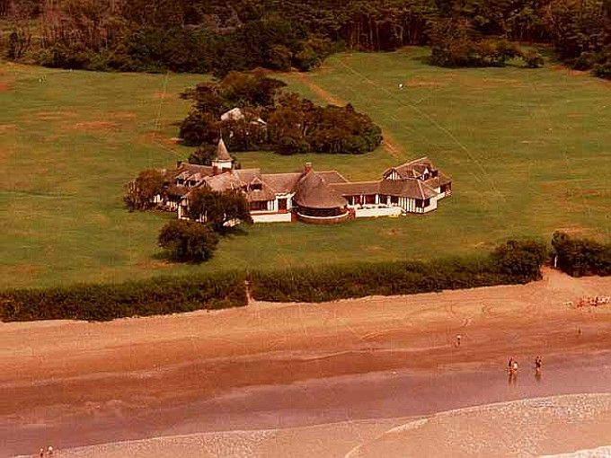
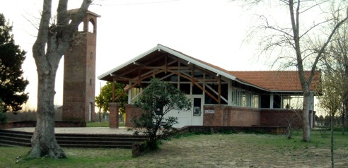

El 17 de junio de 1966 se fundó el balneario ahora conocido con el nombre de Aguas Verdes. Aislado de toda civilización, la única forma de acceso era desde Mar del Tuyú o Mar de Ajó a través de sus playas. Eso, siempre y cuando la marea no estuviese alta.

Aguas Verdes sólo se conecta con Lucila del Mar, esto sucede porque entre ambas localidades se encuentra una de las primeras construcciones de la zona conocida como el Castillo Duhau, que era propiedad de aquella familia.
Este inmenso Castillo, de estilo normando, cuenta con un gran parque de gramilla y sus límites norte, sur y oeste están forestados. Hacia el este contacta con el litoral marino, por eso es que el Castillo Duhau puede verse desde los médanos de la playa.

La capilla Nuestra Señora de la Anunciación, fue construida en madera y ladrillo en 1987. Se halla frente a la Cruz, y además de sus amplios ventanales, en su interior posee un mural de mayólica donde está representado el nombre de la Capilla e importantes tallas de mader